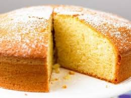

Gâteau au yaourt
Ingredients
6×
- 20 g de beurre
- 1 yaourt
- 3 oeufs
- 2 pots de sucre
- 3 pots de farine
- 1 sachet de levure
- 1 gousse de vanille
- 1 sachet de sucre vanillé
- 1 pot d'huile d'arachide ou de tournesol

Préparation
Étape 1
Préchauffer le four à 180ºC. Beurrer un moule à manqué avec 20 g de beurre.
Étape 2
Verser 1 yaourt dans un saladier ; le pot sert de mesure.
Étape 3
Fouetter 3 oeufs avec 2 pots de sucre et les ajouter au yaourt.
Étape 4
Ajouter 3 pots de farine, 1 sachet de levure, les graines d’1 gousse de vanille, 1 sachet de sucre vanillé et 1 pot d'huile d'arachide ou de tournesol. Mélanger jusqu’à obtenir une pâte lisse.
Étape 5
Verser dans le moule et cuire 30min.
Conseils
La vanille peut être remplacée par 100g de chocolat blanc fondu.